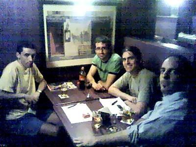
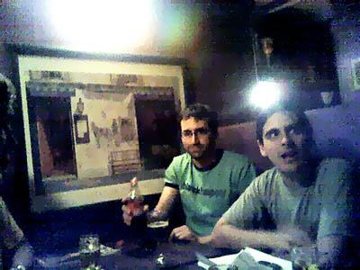

Se llevó a cabo la quinta reunión de PyAr con total éxito. Como MarianoDraghi (escriba oficial) estaba de vacaciones, recayó en mí (FacundoBatista) la tarea de contarles qué hicimos.
Charlamos con los nuevos participantes, Leonardo, Octavio, David y Santiago, conociendo lo que hacen, qué hacen en Python, etc. Como nota de color, tuvimos el primer participante que no viene del área de sistemas, sino que es biólogo (Octavio, y usa Python para procesar datos).
Discutimos el mejor framework para crear un sistema administrativo con interfaz web, tema introducido por Leonardo, cuya necesidad es práctica y surge de su contexto laboral.
Definimos una cuestión administrativa que teníamos pendiente: ¿qué vamos a hacer con nuestra lista de correo? La decisión final es encontrar una lista que cumpla con nuestras expectativas (que pueda tener nuestro dominio y que tenga archivo) y migrar a ella. Pero antes, nada. Al respecto, yo me llevé como pendiente averiguar que características tienen las listas que puedo hostear en mi sitio.
Expuse Decimal. Estuvo muy interesante, porque nos poníamos a discutir sobre la curvatura del círculo, que los complejos tienen infinitos todo alrededor, sobre el pelo del gato y la quinta pata del huevo. ¡Y hasta les pude contar como usar el módulo! Realmente me encantó. Ah, de paso:
>>> from decimal import * >>> Decimal("-0") Decimal("-0") >>> Decimal("0") Decimal("0") >>> Decimal("0") == Decimal("-0") True
Definimos el tema del Primer Sprint PyAr: vamos a hacer el Administrador de Colas de Mensajes (nombre no oficial), con interfaces SMTP (mail), SMPP (SMSs o mensajes cortos) y MM7 (MMSs o mensajes multimedia). La primer reunión será el Jueves 27 de Enero en el mismo lugar que hicimos la reunión, ya que comenzaremos con el diseño del sistema, y no necesitamos más que papel, lápiz, y buenas ideas (y, por supuesto, cerveeeeza).
Fotos sacadas por Lucio
De izquierda a derecha, redactado por una persona disléxica y que no tiene memoria para los nombres: La sombra negra es Alejandro (Dave, para HAL) Detras de él, estoy yo, LucioTorre. Y atras mío Octavio. A la izquierda de Octavio (corriendo la mirada un poco a la derecha), lo encontramos a FacundoBatista. Frente a el esta Leonardo (quien vino desde San Luis exclusivisimamente para la reunion). Frente a el esta Santiago, apenas reconocible. Y en la punta, poniendo la mitad de la cara a la luz y la mitad a la sombra, lo tenemos al procer de PyAr, PabloZiliani.
Acá hay menos gente, por lo que es mas fácil, de izquierda a derecha: Octavio, Facundo, Leonardo, Pablo.
Leonardo y Facundo.